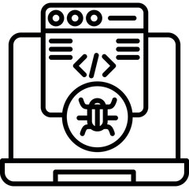
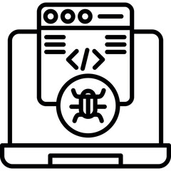

Welcome to Our bug tracking application !!
This is the homepage where you can find information about our services and contact us for more details.
This is the homepage where you can find information about our services and contact us for more details.
Our bug tracking application helps you stay on top of issues, ensuring your software is always performing at its best. From identifying bugs to tracking their resolution, we've got you covered.Bug tracking tools in software testing are software applications designed to record, track, and manage bugs or defects throughout the development lifecycle. These tools help ensure that issues are identified, prioritized, and resolved efficiently, improving the overall quality of the software.
 
